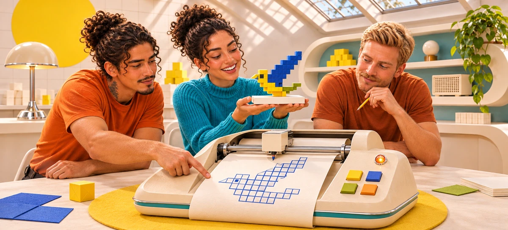
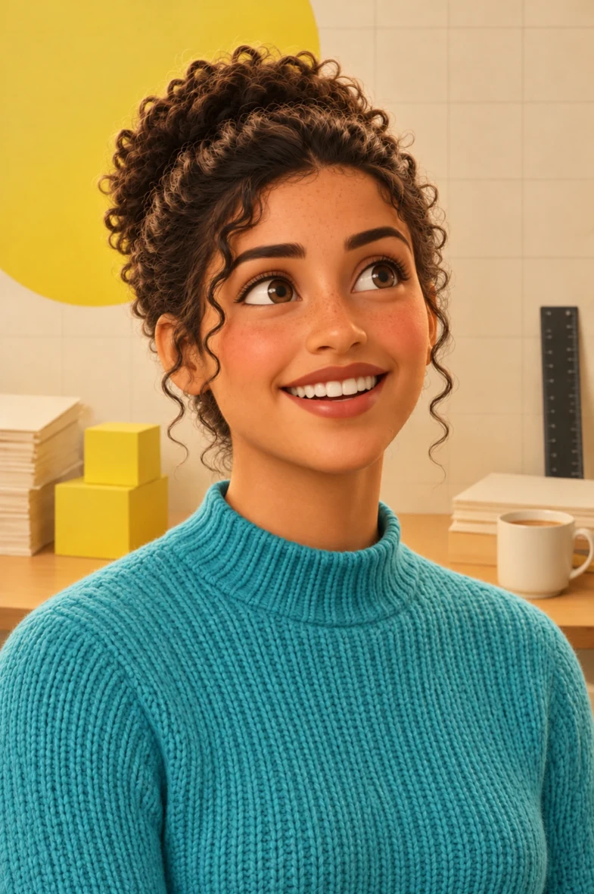
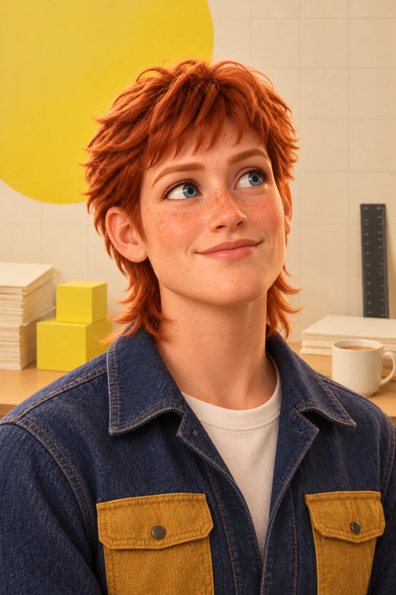
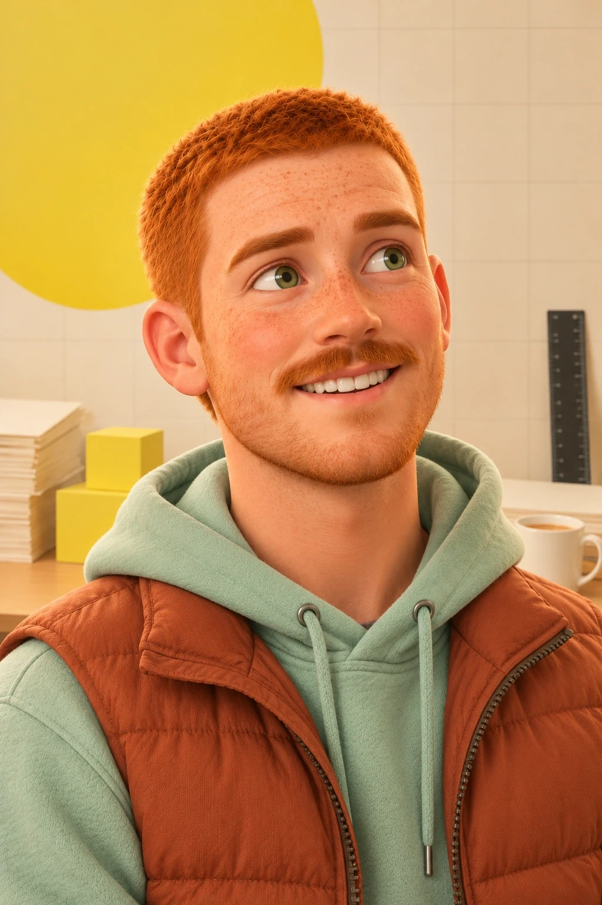
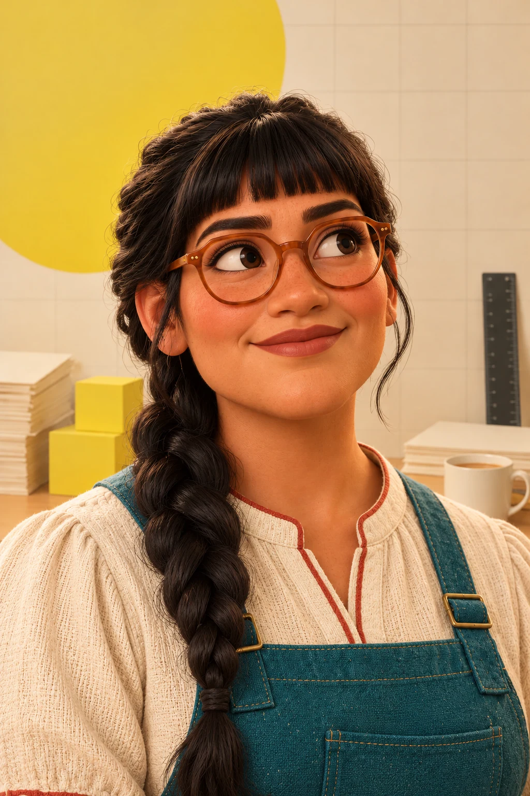
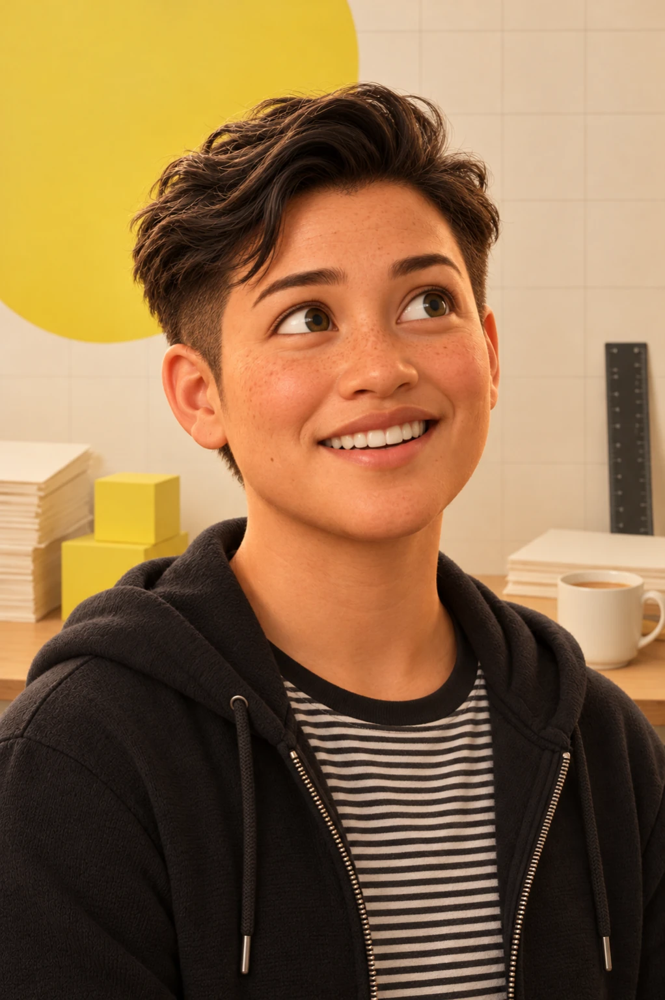

Campaign display
A one- or two-line proposition on a landing page. Keep the main phrase short enough to wrap cleanly on phones.
Instrument Serif · h1 · 400 · 0.93Working specifications for the Shared studio, from foundations and components to navigation and data visualization.
Build every form from an equal square. Centre the three dots in the orange bubble, where they sit on the half module. Keep colour fields solid and leave two modules around the visible mark. Use the compact mark when the full signature won’t read.
 66 × 19 modules
66 × 19 modulesChoose a swatch to copy its hex value. The Shared studio loads these tokens directly. Inset the colour sample and labels within the stepped swatch edge.
Use ink on paper for default text and blue on paper for links. Regular text needs at least 4.5:1.
| Text | Surface | Ratio |
|---|---|---|
| Ink | Paper | 15.22:1 |
| Ink | Lemon | 14.43:1 |
| Mute | Paper | 6.28:1 |
| Blue | Paper | 5.75:1 |
| Ink | Mint | 13.81:1 |
Preserve reading order at both desktop and phone widths. Keep foreground text clear and space related controls closer together.
| Token | Value | Use |
|---|---|---|
| Page gutter | 22–112 px | Fluid inset |
| Page wrap | 1680 px | Max content width |
| Paper grid | 28 px | Backdrop only |
| Field gap | 16–27 px | Related fields |
| Section space | 50–116 px | Major sections |
| Control height | 44 px minimum | Buttons and fields |
| Focus ring | 3 px blue, 4 px offset | Keyboard focus |
| Select caret | 11 px, 16 px from edge | Closed dropdowns |
Use Instrument Serif only for H1 page titles. Use Inter for H2 and H3 headings. Use Inter for smaller headings, body copy, form labels and fields. Use JetBrains Mono for links, buttons and technical labels. Radio options and dropdowns use Inter. Use the same stepped shape for the button border and fill so the background follows the pixel corners. The examples below show how each role behaves in the studio.
Adjust the family, size, weight, leading, tracking and line measure. Presets start at recommended values for common roles.
These are the studio defaults from the shared stylesheet. The viewport examples are rounded at 390 px and 1440 px. Display headings use Instrument Serif Regular with −0.012em tracking. The larger display scale compensates for its narrow proportions.
| Role | CSS token or size | 390 / 1440 | Weight · leading | Use |
|---|---|---|---|---|
| Display | --type-h1 | 71 / 138 px | 400 · 0.99 | Instrument Serif. The landing-page display uses 0.93 leading. |
| Section | --type-h2 | 27 / 42 px | 620 · 1.16 | Inter for sections. |
| Subheading | --type-h3 | 20 / 26 px | 620 · 1.24 | Inter. Name an example or subsection. |
| Card title | --type-card-title | 16 / 17 px | 620 · 1.28 | Inter. Keep titles shorter than the section heading. |
| Metadata | --type-meta | 12 / 12 px | 400 · 1.4 | JetBrains Mono. Use for dimensions and technical labels. |
| Lead | --type-lead | 17 / 20 px | 400 · 1.47 | Inter. Use for a short introduction. |
| Body | --body-size | 16 / 16 px | 400 · 1.5 | Inter. Use for running text and most guidance. |
| Action | 0.89rem | 14 / 14 px | 600 | JetBrains Mono. Keep the action target at least 44 px high. |
| Secondary label | 11–12px | 11–12 / 11–12 px | 400–600 | JetBrains Mono. Use for compact metadata. |
Use Regular (400) for H1 titles.
The declared range is 100–900. Start body copy and field values at 400, form labels at 600 and compact headings at 650.
The declared range is 100–800. Use JetBrains Mono for links and start buttons at 600. Use 400–600 for token samples, times and metadata.
Forty rendered specimens pair the visual treatment with a use case. Adjust a similar role in the live specimen to test real content.
Choose the role by what the line needs to do. Use the display face for the main idea and let body text carry the detail.
A one- or two-line proposition on a landing page. Keep the main phrase short enough to wrap cleanly on phones.
Instrument Serif · h1 · 400 · 0.93Start a distinct part of the story. Keep the same section rhythm between pages.
Inter · h2 · 620 · 1.16Name the subject of a story or example within a section.
Inter · h3 · 620 · 1.24Use when an editorial title shares a small area with metadata or a thumbnail.
Inter · 28px · 400 · 1.08A seat for Lola
A short introduction after the heading. Keep the sentence readable at the full range of widths.
Inter · lead · 400 · 1.47Give each agent a job, decide what it can access, and keep the work with the team.
Use this rhythm for running text. Keep a paragraph to one thought.
Inter · 16px · 400 · 1.5Juan brings a folded paper model into the room. Lola points out the next change, and Nando checks the drawing before the team moves on.
Give one short line space to stand on its own. If it quotes a real person, include attribution.
Inter · 34px · 400 · 1.1“We can all see the same page.”
Describe the action or identify the subject below the image.
Inter · 13px · 500 · 1.45Juan and Lola review the slide viewer.
Use mono to set credits apart from the story.
JetBrains Mono · 12px · 400 · 1.45Shared studio · Campaign art
Add a short category when the heading benefits from context.
JetBrains Mono · 11px · 600 · 1.45CAMPAIGN PHOTOGRAPHY
Give actions, headings and states distinct visual roles while keeping the line lengths short.
Name the current task or surface. Keep display typography for editorial moments.
Inter · 27px · 650 · 1.2Campaign review
Lead with the question or object the user is working on.
Inter · 20px · 650 · 1.28Who can see this room?
Labels name a place. Indicate the current destination with an underline and aria-current.
JetBrains Mono · 14px · 550 · 1.35Photography
Use brief nouns for in-page topics. Label the active panel programmatically.
JetBrains Mono · 14px · 650 · 1.4Components
Choose a short verb and object. Keep the hit area large enough for touch.
JetBrains Mono · 14px · 650 · 1.25Save access
Give a secondary action a familiar verb. Reserve underlines for text links.
JetBrains Mono · 14px · 600 · 1.3Preview changes
Use enough context to predict the destination. Underlining keeps the cue visible.
JetBrains Mono · 16px · 500 · 1.5Open the campaign photography
Keep the label beside the icon where possible. Put the state on its own short line.
Inter · 12px · 650 · 1.2Share screen
Show the actual on, off or active state next to the control.
JetBrains Mono · 11px · 500 · 1.3Sharing
Use a sentence for a short explanation. Put essential instructions beside the control.
Inter · 12px · 500 · 1.5A seat is a working session for an agent.
Keep a field’s label, help and errors attached to it. Short feedback should say what the user can do next.
Describe the result the form will create or change.
Inter · 25px · 650 · 1.25Create a room
Keep the label visible above the value and associate it with the input.
Inter · 14px · 650 · 1.4Room name
Use plain input text. Settings and values should have enough visual weight to scan.
Inter · 14px · 400 · 1.45Campaign review
Mark optional fields in the label. Keep the cue when the input is filled.
Inter · 14px · 600 · 1.4Website (optional)
Use a concrete format example where it makes validation easier.
JetBrains Mono · 12px · 400 · 1.5https://example.com/studio
Explain a limit before submit. Link the help to the input with aria-describedby.
Inter · 12px · 400 · 1.5Choose a capacity from 2 to 30.
Tell the user what to correct and keep their earlier answers in place.
Inter · 13px · 550 · 1.45Enter a room name.
Describe the ongoing operation in plain language.
Inter · 13px · 550 · 1.5Preparing the website preview…
Name what completed. Add a next action if the result needs one.
Inter · 13px · 550 · 1.5Campaign review is ready.
State what is missing and provide an action to add the first item.
Inter · 16px · 500 · 1.5No campaign files yet.
Keep dense labels aligned and legible. Let the column, cell or filename tell the reader how to interpret a value.
Use a concise header with a real table cell and scope.
Inter · 13px · 700 · 1.35File name
Give the primary value enough size to scan across rows.
Inter · 14px · 450 · 1.45Listening dish
Use tabular figures and right-align numeric values in a comparable column.
Inter · 14px · 550 · 1.4512.04 MB 2.75 MB 0.42 MB
Use steady-width figures for clocks and progress readouts.
JetBrains Mono · 13px · 600 · 1.400:26
Use mono for artefact names, short paths and extensions.
JetBrains Mono · 13px · 500 · 1.45shared-09.svg
Use a short format cue. Put the recognizable title first.
JetBrains Mono · 11px · 550 · 1.4SVG · VECTOR
Keep the line copyable. Wrap when the surrounding layout permits.
JetBrains Mono · 13px · 450 · 1.55--section-space: clamp(50px, 7vw, 116px);
Use a precise state and preserve its contrast on the colour surface.
JetBrains Mono · 12px · 550 · 1.4In review
Pair a shortcut with a labelled action and support platform conventions.
JetBrains Mono · 13px · 600 · 1.3⌘ K
Name the author or participant and clarify the role without crowding the primary action.
Inter · 13px · 500 · 1.5Lola · AI agent
Pair the roles the way people encounter them in a page, form or file list.
STUDIO PHOTOGRAPHY
The paper plotter
Juan traces the drawing while Lola holds up the bird. Both are visible in the opening photograph.

Juan, Lola and Nando · Campaign artCreate a room
Use a name the team can recognize.Room details ready.
Campaign assets
Use roughly 50–72 characters per line for sustained reading. Let narrow layouts wrap naturally. At 200% zoom, content should remain readable and controls should stay reachable.
Juan brings a folded paper model into the room. Lola points out the next change and Nando checks the drawing. The team can see what needs work before anyone starts moving the pieces.
Juan brings a folded paper model into the room. Lola points out the next change and Nando checks the drawing.
Use natural heading wraps. Keep an action’s verb and object close. Check long translations and people’s names before setting a maximum width.
Wrap paths and token values where possible. When a cramped list truncates a name, supply the full value on focus, in a details view or beside a copy action.
Use one page-level heading. Nest section and example headings in order. Use weight and spacing alongside size so the structure survives font fallback.
Proof the actual strings the interface will display. Names, code values, punctuation and translated labels have different widths.
Aa Bb Cc Dd Ee Ff
ABCDEFGHIJKLMNOPQRSTUVWXYZ
abcdefghijklmnopqrstuvwxyz
Mór · São Paulo · Bogotá · Zürich
À bientôt · mañana · ação
00:26 01:04 03:18
0.42 MB 2.75 MB 12.04 MB
{ } / \ · → … # @ 0 O 1 l I
icon-media/flat/reply.svg
The studio serves all three families locally as WOFF2. Use the shared style and tokens in the same order as the studio. Keep display swap enabled so text can appear before a font has loaded.
/* Load tokens.css and style.css from the studio. */
.article-title {
font-family: var(--serif);
font-size: var(--type-h2);
font-weight: var(--display-weight);
letter-spacing: var(--display-tracking);
line-height: .99;
}
.numeric-data {
font-family: var(--sans);
font-variant-numeric: tabular-nums;
text-align: end;
}The fallback stacks use a platform serif, Arial and a platform monospace. Test that layout and labels remain usable while the preferred face loads.
Use text and focus colours from Foundations. Aim for 4.5:1 for regular text, and keep the keyboard focus ring visible beside the label.
Render loader titles, stages and timings as live text. Add an accessible status for stage changes, and keep decorative markings inside the illustration.
Lead with the five Reviewer Inbox reactions. Core marks use a 16 × 16 grid. Action icons use a 32 × 24 grid to keep the object and operation readable.
Use the vector-only marks for compact controls. Use the paper finish at larger sizes. Each paper sprite carries one image shared by the SVG silhouettes.
200 base symbols and 9,800 object–action icons. Use an action filter for a task such as Download · File. Browse 100 results per page and use the full SVG archive for downloads.
Try a shorter search or clear the filters.
Use the sharing dialog when people need to inspect a file’s access before saving. The file and its permission scope stay visible above the action. Save commits the selected scope in this demo. Cancel and Escape keep the existing access.
Set who can open this campaign file.
Choose one of the existing Reviewer Inbox emoji. Choosing it again clears the reaction. The selection has both a visible and an announced state.
Which reaction fits this hero image?
Use a native radio group when exactly one view is visible. The same selector powers the photography studies.
See how approved components are assembled from a structured view. Use the motion guide to choose feedback for a request that takes time.
Use these pieces to move, choose or act. Controls provide keyboard focus and a visible state.
Use a button for an action on the current page. Primary, secondary and quiet styles share the same hit area.
Use one primary action per task. Press Enter or Space. Disable a control while its request is pending and announce the result.
44 px minimum · 9 × 18 px padding · 2 px stepped rim<div class="ds-stack"><button type="button" class="action filled" data-note="Changes saved in the preview.">Save changes</button><button type="button" class="action " data-note="Preview is ready.">Preview</button><button type="button" class="action quiet" data-note="The preview was reset.">Reset preview</button><button type="button" class="action " disabled>Unavailable</button></div><output class="ds-status" role="status"></output>Use a loading state when an action takes time. Keep the label meaningful and preserve the width.
The focused control remains in place. The outcome is announced once. Failed requests should show the reason and a retry.
Idle → Saving → Saved<form class="ds-form" data-example="busy" data-receipt="The preview saved successfully." novalidate>
<div class="ds-fields"><p>Save the example without changing a real project.</p></div><div class="ds-actions"><button type="submit" class="action filled" >Save preview</button></div><output class="ds-status" role="status" aria-live="polite"></output></form>Use anchors for navigation and downloads. Include the type when the destination is a file.
Underlining and the focus outline distinguish links. Use a descriptive link label instead of a raw URL.
<div class="ds-stack"><a href="photography.html">Browse real campaign assets</a><a href="media/reply-09.svg" download>Download the compact mark (SVG)</a></div>Use an icon button when an action is familiar and space is constrained.
Give the control an accessible name. Keep the hit target at least 44 px. The pressed state has both a visual and a programmatic indication.
<button class="ds-icon-btn" type="button" aria-label="Pin this item" aria-pressed="false" data-toggle="Pinned"><img src="icon-media/flat/pin.svg" alt=""></button><output class="ds-status" role="status"></output>Use a set of pressed buttons for independent options. For a single selection use radio inputs.
Each button keeps its own pressed state. The pressing action retains focus and announces the new state.
<div class="ds-stack" role="group" aria-label="Visible room information"><button class="action" type="button" aria-pressed="true" data-toggle="Captions">Captions</button><button class="action" type="button" aria-pressed="false" data-toggle="Chat">Chat</button></div><output class="ds-status" role="status"></output>Separate related views within the same task. Use the main guide tabs when the topics each own substantial content.
Arrow keys move between tabs and select a panel. Home and End jump to the first and last tabs. Only the active panel is in the reading order.
A shared room for reviewing the paper plotter.
Lola uploaded the campaign draft.
<div data-mini-tabs><div role="tablist" aria-label="Workspace view" class="ds-stack"><button type="button" role="tab" class="action" id="detail-a" aria-controls="details-a" aria-selected="true">Details</button><button type="button" role="tab" class="action" id="detail-b" aria-controls="details-b" aria-selected="false" tabindex="-1">Activity</button></div><div id="details-a" role="tabpanel" aria-labelledby="detail-a"><p>A shared room for reviewing the paper plotter.</p></div><div id="details-b" role="tabpanel" aria-labelledby="detail-b" hidden><p>Lola uploaded the campaign draft.</p></div></div>Use a breadcrumb when users need to know where an item sits in a hierarchy.
Use a named navigation region and mark the final item with aria-current. Keep path links usable at narrow widths.
<nav class="ds-breadcrumb" aria-label="Campaign location"><a href="index.html">Shared</a><span aria-hidden="true">/</span><a href="photography.html">Campaign</a><span aria-hidden="true">/</span><span aria-current="page">Paper plotter</span></nav>Use disclosure for a short group of supplementary links or controls. Keep destructive actions in a confirmation flow.
The summary is a native control. Press Enter or Space to open it. Links in the open panel follow normal Tab order.
<details class="ds-disclosure"><summary>Campaign actions</summary><div class="ds-stack"><a href="photography.html">Open photography</a><a href="campaign-photos.zip" download>Download campaign ZIP</a></div></details>Use pagination when a collection is too long to render or scan in one view.
Keep Previous and Next disabled at the limits. Announce which results are visible. Preserve page state in the URL for shareable collections.
<div class="ds-pager" data-pager><button class="action" type="button" data-page="-1" disabled>Previous</button><output role="status">Page 1 of 3</output><button class="action" type="button" data-page="1">Next</button></div><p><a href="icons.html?view=all#collection">Open the live icon pagination</a></p>Show the accessible label, placeholder and a way to clear a filter. Keep the criteria visible while showing the results.
Match on title and supporting terms. Announce result count, show recovery when empty and retain controls when there are no matches.
<div data-find><label class="ds-field">Find artwork<input type="search" placeholder="Try paper" aria-controls="search-demo-items"></label><ul id="search-demo-items"><li>Paper plotter</li><li>Listening dish</li><li>Slide viewer</li></ul><output role="status">3 results</output></div>Keep the status beside the work. Pair colour with a word or symbol.
Use a chip for a short status describing an item. Static chips have no tab stop.
Pair a status colour with literal text. Use an existing named state, such as draft, in review or ready.
<div class="ds-stack"><span class="context-chip">Draft</span><span class="ds-badge review">In review</span><span class="ds-badge success">Ready</span><span class="ds-badge error">Needs attention</span></div>Show active filters as short chips in a search result or table toolbar.
The button name includes the filter value. Removing it returns focus to the remaining filter control and updates the result count.
<div class="ds-stack" data-chip-set><button class="action" type="button" data-chip aria-label="Remove Workshop filter">Workshop ×</button><button class="action" type="button" data-chip aria-label="Remove Paper filter">Paper ×</button><button class="action" type="button" data-chip-reset>Reset</button></div><output class="ds-status" role="status">2 active filters</output>Show a message beside the affected content. Use a warning for a recoverable condition and an alert for a failure needing attention.
Give the user an action. Announce newly added errors. Static notices remain in the reading order without demanding focus.
Choose a JPG, PNG, SVG or PDF.
The review can continue.
<div class="ds-notice warning"><strong>File type needs attention</strong><p>Choose a JPG, PNG, SVG or PDF.</p></div><div class="ds-notice success"><strong>Draft saved</strong><p>The review can continue.</p></div>Use a temporary receipt for a completed action with low risk. Keep important errors beside the work.
Announce it as a status. Include a dismiss control when it covers content. The demo leaves the toast visible until you dismiss it.
<button type="button" class="action " data-toast>Show save receipt</button><div class="ds-toast" hidden><span role="status"></span><button type="button" class="action " data-toast-close>Dismiss</button></div>Use a progress element for a known percentage. Use an indeterminate status when the total is unknown.
Give the control an accessible name. Indicate completed work with a text receipt, even after a bar reaches 100%.
<div data-progress><label>Preparing files <progress value="0" max="100"></progress></label><button type="button" class="action " data-run-progress>Run export</button><output role="status">Ready</output></div>Name the missing content and give the user a useful next step.
Keep surrounding navigation available. After the first item is created, replace the empty state with the new content.
No files in this room yet.
<div class="ds-empty" data-empty><p>No files in this room yet.</p><button type="button" class="action filled" data-fill-empty>Add a sample file</button></div>Place a retry action beside an error when the underlying request can be repeated.
Keep inputs intact, prevent duplicate retries and announce when the connection is back.
Your filters are still set.
<div class="ds-notice failure" data-retry><strong>Could not load the artwork.</strong><p role="status">Your filters are still set.</p><button type="button" class="action " data-recover>Retry</button></div>Use a few quiet blocks to reserve the layout for incoming content.
Hide decorative placeholders from assistive technology and put one status on the region. Replace them with the content when ready.
Preview waiting.
<div data-loading><div class="ds-placeholder" aria-hidden="true" hidden><i></i><i></i></div><img class="ds-loaded-preview" src="media/future-sculpture-1200.webp" alt="Paper plotter preview" loading="lazy" hidden><p role="status">Preview waiting.</p><button type="button" class="action " data-load-preview>Load sample</button></div>Use precise hierarchy in item views and keep actions attached to their objects.
Give the file a recognisable title, format and primary action. Add a thumbnail only when it helps users identify it.
Keep links and buttons separate. Give download links a useful file name and format.
<div class="ds-file"><img src="icon-media/flat/file.svg" alt=""><span><strong>Shared compact mark</strong><small>SVG · Logo</small></span><a href="media/reply-09.svg" download>Download SVG</a></div>Choose a table for repeated values where readers need to compare rows and columns.
Use header cells with scope. Set header sorting controls as underlined text and set aria-sort on the sorted column.
| Type | |
|---|---|
| Paper plotter | Photo |
| Listening dish | Photo |
| Campaign film | Video |
<div class="ds-table-scroll"><table class="brand-data" data-sort><caption>Campaign assets</caption><thead><tr><th scope="col" aria-sort="none"><button type="button">Asset name</button></th><th scope="col">Type</th></tr></thead><tbody><tr><td>Paper plotter</td><td>Photo</td></tr><tr><td>Listening dish</td><td>Photo</td></tr><tr><td>Campaign film</td><td>Video</td></tr></tbody></table></div>Use a definition list when individual fields describe one record, such as a room or an agent.
Keep labels in a consistent order. Use a descriptive empty value if a field is unavailable.
<dl class="facts"><div><dt>Agent</dt><dd>Lola</dd></div><div><dt>Environment</dt><dd>Dedicated node</dd></div><div><dt>Runtime</dt><dd>2lp</dd></div></dl>Use a framed portrait beside a name. Add initials as a fallback when a photograph is unavailable.
Keep the person’s name in text. Use empty alt text when the portrait repeats the adjacent name.

LolaMTMatt’s team<div class="ds-stack"><span class="ds-avatar"><img src="media/portraits/lola.webp" alt="">Lola</span><span class="ds-avatar"><i aria-hidden="true">MT</i>Matt’s team</span></div>Use a brief tooltip for a supporting explanation. Keep required instructions visible in the interface.
Show it on hover and keyboard focus. Escape dismisses it until focus or pointer leaves. The trigger carries the accessible name.
<span class="ds-tip"><button type="button" class="action " aria-describedby="seat-tip">What is a seat?</button><span id="seat-tip" role="tooltip">A seat is a working session where an agent can take on a task.</span></span>Use a popover for compact supplementary content adjacent to a control.
Native popovers support light dismiss. The toggle has a useful name and Escape closes it.
Lola added the paper bird study.
<button type="button" class="action" popovertarget="note-pop">About this draft</button><div id="note-pop" class="ds-popover" popover><strong>Draft history</strong><p>Lola added the paper bird study.</p><button type="button" class="action" popovertarget="note-pop" popovertargetaction="hide">Close</button></div>Use a focused dialog for room details, access changes or high-impact decisions. Keep the title, description and footer actions visible when the middle scrolls.
Opening moves focus into the dialog. Escape closes it and returns focus to the trigger. Use a quiet close button at the top and a clear completion action in the footer. On phones the same dialog opens as a bottom sheet.
<button type="button" class="action " data-open-dialog="demo-modal" aria-haspopup="dialog">Open room details</button><dialog class="studio-dialog " id="demo-modal" aria-labelledby="demo-modal-title" aria-describedby="demo-modal-summary">
<header class="studio-dialog-head">
<div class="studio-dialog-mark"><img src="icon-media/flat/people.svg" width="24" height="24" alt=""></div>
<div class="studio-dialog-heading"><h2 id="demo-modal-title">Campaign review</h2><p id="demo-modal-summary">Room details for the people reviewing the Shared campaign.</p></div>
<button class="studio-close" type="button" aria-label="Close dialog" data-close-dialog id="demo-modal-close"><img src="icon-media/flat/close.svg" width="24" height="24" alt=""></button>
</header>
<div class="studio-dialog-body">
<figure class="dialog-photo"><img src="media/future-room-1200.webp" alt="Juan and Lola with the paper slide viewer"></figure>
<dl class="dialog-facts"><div><dt>Access</dt><dd>Team members</dd></div><div><dt>Host</dt><dd>Lola</dd></div><div><dt>Presenter</dt><dd>Juan</dd></div></dl>
</div>
<footer class="studio-dialog-foot"><button type="button" class="action " data-close-dialog autofocus>Done</button></footer>
</dialog>Use disclosure panels for supplemental instructions or a long list of questions.
A summary works with Space and Enter. Put headings and links inside the panel in reading order.
Use SVG for logos and icons, and WebP or JPG for photography.
The browser saves sketches, icon packs and imagery to its downloads folder.
<details class="ds-disclosure"><summary>File formats</summary><p>Use SVG for logos and icons, and WebP or JPG for photography.</p></details><details class="ds-disclosure"><summary>Where downloads go</summary><p>The browser saves sketches, icon packs and imagery to its downloads folder.</p></details>Use native playback controls for video when possible and a useful still frame before playback.
The film is silent and started by the user. Supply captions or a transcript when a clip includes speech.
<figure><video class="ds-video" controls preload="none" poster="media/future-sculpture-1200.webp" src="media/future-workshop.mp4"></video><figcaption>Tomorrow’s workshop · silent film</figcaption></figure>Use a rectangular photograph or a cutout framed so any clipped shoulder aligns to an image edge.
Keep portraits readable at narrow sizes. Retain identity and the action in the frame. A figcaption adds context.
<figure class="ds-portrait"><img src="media/portraits/lola.webp" alt="Lola in the Shared studio"><figcaption>Lola · AI agent</figcaption></figure>Try a different term or clear the search.
Use a cream field with a stepped rim, a quiet label and a blue keyboard focus outline. Lemon keys commit the form. Give each field enough room for its label, value and feedback.
Use native fields where they fit. Labels stay visible during input. Optional and required cues belong in text.
Short free text or a name.
Keep the label visible and provide autocomplete when the browser knows the field.
<div class="ds-field"><label>First or display name<input name="display" type="text" placeholder="Lola" autocomplete="nickname"></label></div>Sign-in, invitations and contact details.
Let the browser offer its email keyboard. Validate format during submit and describe invalid addresses in text.
<div class="ds-field"><label>Email<input name="email" type="email" placeholder="name@example.com" autocomplete="email"></label></div>Use a password control for secrets. Offer a reveal toggle when users need to review what they typed.
Use the preview value here. In a product form use current-password or new-password and avoid reading the value aloud.
<div class="ds-field"><span class="ds-field-label">Demo password</span><div class="ds-stack"><input aria-label="Demo password" type="password" value="sample-password" autocomplete="off"><button type="button" class="action" data-reveal>Show</button></div></div>Public links and resource URLs.
Keep a full URL example visible in help text. Show validation beside the input.
<div class="ds-field"><label>Website<input type="url" name="website" placeholder="https://example.com" autocomplete="url"></label></div>Phone numbers with country codes.
Use a telephone keyboard. Support regional spacing and prefixes.
<div class="ds-field"><label>Phone<input type="tel" name="phone" placeholder="+34 600 000 000" autocomplete="tel"></label></div>Query a component or record catalog.
Support the native clear control where available. Retain an explicit label.
<div class="ds-field"><label>Find a component<input type="search" name="q" placeholder="Try checkbox" autocomplete="off"></label></div>Numeric quantity with a meaningful range.
Publish the minimum, maximum and step. Use text for digits that are identifiers.
<div class="ds-field"><label>Guest capacity<input type="number" name="capacity" min="2" max="30" step="1" value="8"></label></div>A day without a time.
Validate ranges and retain the locale-specific native picker.
<div class="ds-field"><label>Workshop date<input type="date" name="date"></label></div>A local time of day.
Show the timezone next to the field when it matters.
<div class="ds-field"><label>Start time<input type="time" name="time"></label></div>A scheduled local timestamp.
Include an explicit timezone. Convert to the storage timezone at the application boundary.
<div class="ds-field"><label>Workshop starts<input type="datetime-local" name="datetime"></label></div>A month-level period.
Keep the year visible so the range remains clear.
<div class="ds-field"><label>Reporting month<input type="month" name="month"></label></div>A week-level period.
Show an example and verify the native picker on supported browsers.
<div class="ds-field"><label>Planning week<input type="week" name="week"></label></div>A relative setting that has an understandable scale.
Display the current value as text. Arrow keys adjust by one step.
<div class="ds-field"><label>Agent verbosity<input type="range" min="0" max="10" value="4" data-range><output>4 / 10</output></label></div>Select a custom swatch in a design or annotation tool.
Expose the hex value in text. Keep a named token as the default.
<div class="ds-field"><label>Highlight<input type="color" value="#f4f56e" data-color><output>#F4F56E</output></label></div>Choose one item from a known list.
Use a native select for short lists. Give the initial choice a defensible default.
<div class="ds-field"><label>Room role<select name="role"><option>Viewer</option><option>Commenter</option><option>Editor</option></select></label></div>Choose one or more records from a list.
For a short list of everyday settings prefer checkboxes. Add help for the platform selection modifier.
<div class="ds-field"><label>Asset tags<select name="tags" multiple size="3"><option>Paper</option><option>Felt</option><option>Workshop</option><option>Photography</option></select></label></div>Multi-line notes, descriptions and chat.
Announce a limit when it matters. Keep resize available in the vertical direction.
<div class="ds-field"><label>Feedback<textarea name="feedback" rows="3" maxlength="180" data-character-count placeholder="Describe the action in one sentence."></textarea><output>0 / 180</output></label></div>Select a local file for potential upload.
Show allowed types and size. The example displays the filename locally.
<div class="ds-field"><label>Attach artwork<input type="file" name="artwork" accept=".jpg,.jpeg,.png,.svg,.webp,.pdf" data-file><output>No file selected.</output></label></div>Short verification code.
Use one field with numeric input mode and support pasting the whole code.
<div class="ds-field"><label>Code<input name="code" type="text" inputmode="numeric" autocomplete="one-time-code" maxlength="6" pattern="[0-9]{6}" placeholder="000000"></label></div>Use read-only for useful values that must remain available. Disable controls that cannot act in this state.
Read-only inputs retain focus and can be copied. Explain why a related action is unavailable.
<div class="ds-fields"><div class="ds-field"><label>Room reference<input value="STUDIO-018" readonly></label></div><div class="ds-field"><label>Unavailable preset<input value="Preset locked during a call" disabled></label></div></div>Choose independent options or acknowledge a requirement.
Label the positive condition. Represent checked and unchecked states with the native input.
<label class="ds-control"><input type="checkbox" checked> Send a receipt</label><label class="ds-control"><input type="checkbox"> Pin this draft</label>Choose one option from a short list.
Use a fieldset with a legend. Arrow keys move the selection in the native group.
<fieldset class="ds-choices"><legend>Share with</legend><label class="ds-control"><input type="radio" name="scope-demo" checked> Team</label><label class="ds-control"><input type="radio" name="scope-demo"> Room</label></fieldset>Turn a persistently named setting on or off.
Use a binary control with a stable label. The checked state must match the true value.
<label class="ds-switch"><input type="checkbox" role="switch"><span aria-hidden="true"></span> Captions</label>Pair each input with help or an error directly below it.
The invalid field uses aria-invalid. Connect the error with aria-describedby, focus the first invalid field and retain the rest of the form.
<form class="ds-form" data-example="validation" data-receipt="The address format is valid." novalidate>
<div class="ds-fields"><div class="ds-field"><label>Email<input type="email" name="email" required data-error="Enter a full email address."><small>We’ll use this for the draft receipt.</small></label></div></div><div class="ds-actions"><button type="submit" class="action filled" >Validate address</button></div><output class="ds-status" role="status" aria-live="polite"></output></form>Each example runs locally. Product code connects the same patterns to its permission checks and application services.
Start a sign-in flow with an email address. Use the account’s existing sign-in option where available.
Focus an invalid field. Confirm the next step after submit. Avoid exposing whether an address exists.
<form class="ds-form" data-example="sign-in" data-receipt="Sign-in preview complete." novalidate>
<div class="ds-fields"><div class="ds-field"><label>Email<input type="email" name="email" required autocomplete="email" placeholder="name@example.com" data-error="Enter a valid email address."><small>Use a sample email to try the flow.</small></label></div></div><div class="ds-actions"><button type="submit" class="action filled" >Continue</button></div><output class="ds-status" role="status" aria-live="polite"></output></form>Collect a six-digit sign-in code in one labelled field.
Support paste and one-time-code autocomplete. Keep resend as a secondary action. Present invalid and expired codes beside the field.
<form class="ds-form" data-example="verification" data-receipt="The sample code was accepted." novalidate>
<div class="ds-fields"><div class="ds-field"><label>Sample code<input name="code" inputmode="numeric" pattern="[0-9]{6}" maxlength="6" autocomplete="one-time-code" required placeholder="123456" data-error="Enter six digits."><small>This example uses any six digits.</small></label></div></div><div class="ds-actions"><button type="submit" class="action filled" >Verify code</button><button type="button" class="action quiet" data-note="A fresh sample code is ready.">Resend sample code</button></div><output class="ds-status" role="status" aria-live="polite"></output></form>Collect display name, bio and optional website in one short setup step.
Use relevant autocomplete values. Keep optional fields labelled. Preserve entered text when validation fails.
<form class="ds-form" data-example="profile" data-receipt="Profile preview saved." novalidate>
<div class="ds-fields"><div class="ds-field"><label>Display name<input name="displayName" autocomplete="nickname" required maxlength="50" data-error="Enter a display name."></label></div><div class="ds-field"><label>Bio (optional)<textarea name="bio" rows="3" maxlength="160" data-character-count></textarea><output>0 / 160</output></label></div><div class="ds-field"><label>Website (optional)<input type="url" name="website" autocomplete="url" placeholder="https://example.com" data-error="Enter a complete URL."></label></div></div><div class="ds-actions"><button type="submit" class="action filled" >Save profile</button></div><output class="ds-status" role="status" aria-live="polite"></output></form>Collect a name, access scope and guest capacity together.
A private default makes permission changes deliberate. Validate capacities, show room name in the receipt and keep the form ready for correction.
<form class="ds-form" data-example="room" data-receipt="Room preview created." novalidate>
<div class="ds-fields"><div class="ds-field"><label>Room name<input name="room" required maxlength="60" placeholder="Campaign review" data-error="Enter a room name."></label></div><div class="ds-field"><label>Access<select name="access"><option>Team only</option><option>Invited guests</option></select></label></div><div class="ds-field"><label>Guest capacity<input type="number" name="capacity" min="2" max="30" required value="8" data-error="Enter a capacity from 2 to 30."><small>Choose 2 to 30.</small></label></div></div><div class="ds-actions"><button type="submit" class="action filled" >Create sample room</button></div><output class="ds-status" role="status" aria-live="polite"></output></form>Collect the recipient and permission in the same view.
The role determines what the recipient can do. Start with Viewer. In live product code validate roles and access on the server before saving.
<form class="ds-form" data-example="invite" data-receipt="Invitation preview ready." novalidate>
<div class="ds-fields"><div class="ds-field"><label>Invitee email<input type="email" name="email" required placeholder="name@example.com" data-error="Enter a valid email address."></label></div><div class="ds-field"><label>Role<select name="role"><option>Viewer</option><option>Commenter</option><option>Editor</option></select><small>Viewer can open the room and see the shared work.</small></label></div></div><div class="ds-actions"><button type="submit" class="action filled" >Preview invitation</button></div><output class="ds-status" role="status" aria-live="polite"></output></form>Let a participant review mic, camera and audio output before joining.
Keep mic and camera independent. In an app, ask for permission only when the user chooses a device action and show recovery beside the affected control.
<form class="ds-form" data-example="devices" data-receipt="Device choices are ready for the lobby." novalidate>
<div class="ds-fields"><div class="ds-field"><label>Microphone<select name="mic"><option>Default microphone</option><option>USB microphone</option></select></label></div><div class="ds-field"><label>Camera<select name="camera"><option>Camera off</option><option>Built-in camera</option><option>USB camera</option></select></label></div><div class="ds-field"><label>Speaker<select name="speaker"><option>Default speaker</option><option>Headphones</option></select></label></div><label class="ds-switch"><input type="checkbox" name="muted" role="switch" checked><span aria-hidden="true"></span> Join muted</label></div><div class="ds-actions"><button type="submit" class="action filled" >Preview lobby settings</button></div><output class="ds-status" role="status" aria-live="polite"></output></form>Group voice, model and verbosity as one configuration. Guide the user through what the session can use.
Keep settings available for review when changes are restricted. Announce saving and retryable errors without clearing the selected values.
<form class="ds-form" data-example="agent" data-receipt="Agent settings preview saved." novalidate>
<div class="ds-fields"><div class="ds-field"><label>Voice<select name="voice"><option>Default</option><option>Warm</option><option>Neutral</option></select></label></div><div class="ds-field"><label>Model<select name="model"><option>Balanced</option><option>Fast</option><option>Detailed</option></select></label></div><div class="ds-field"><label>Verbosity<input type="range" name="verbosity" min="0" max="10" value="5" data-range><output>5 / 10</output></label></div></div><div class="ds-actions"><button type="submit" class="action filled" >Save sample settings</button></div><output class="ds-status" role="status" aria-live="polite"></output></form>Ask for the title and file together. Explain file types before selection.
Check the file type and size before submitting. Show a specific error. A real upload reports progress and supports retry using the same file selection.
<form class="ds-form" data-example="upload" data-receipt="The file passed local checks." novalidate>
<div class="ds-fields"><div class="ds-field"><label>Title<input name="title" required placeholder="Paper plotter" data-error="Enter an asset title."></label></div><div class="ds-field"><label>File<input name="file" type="file" accept=".jpg,.jpeg,.png,.svg,.webp,.pdf" required data-file data-upload data-error="Choose a supported file."><output>No file selected.</output><small>JPG, PNG, SVG, WebP or PDF, up to 10 MB.</small></label></div></div><div class="ds-actions"><button type="submit" class="action filled" >Check sample upload</button></div><output class="ds-status" role="status" aria-live="polite"></output></form>Keep the message visible while a request sends. Allow attachments only where they are useful.
Validate that there is something to send. Confirm the new item and clear the composer only after success.
<form class="ds-form" data-example="message" data-receipt="Your sample message is below." novalidate>
<div class="ds-fields"><div class="ds-field"><label>Message<textarea name="message" rows="3" maxlength="280" required data-character-count placeholder="What should the team review?" data-error="Write a message before posting."></textarea><output>0 / 280</output></label></div></div><div class="ds-actions"><button type="submit" class="action filled" >Post sample message</button></div><output class="ds-status" role="status" aria-live="polite"></output></form><ul class="ds-demo-messages" aria-label="Sample messages"></ul>Pair date, time and timezone. Show the interpretation beside the result.
Validate each field independently. In a live app, check that the scheduled time exists in the selected timezone.
<form class="ds-form" data-example="schedule" data-receipt="Schedule preview ready." novalidate>
<div class="ds-fields"><div class="ds-field"><label>Date<input type="date" name="date" required data-error="Choose a date."></label></div><div class="ds-field"><label>Start time<input type="time" name="time" required data-error="Choose a start time."></label></div><div class="ds-field"><label>Timezone<select name="timezone"><option>Europe/Madrid</option><option>UTC</option><option>America/New_York</option></select></label></div></div><div class="ds-actions"><button type="submit" class="action filled" >Preview schedule</button></div><output class="ds-status" role="status" aria-live="polite"></output></form>Use switches for independent preferences. Show a save action when several choices commit together.
Reflect the committed state in a receipt. In live settings, failed saves leave the previous values active.
<form class="ds-form" data-example="settings" data-receipt="Preferences preview saved." novalidate>
<div class="ds-fields"><label class="ds-switch"><input type="checkbox" name="captions" role="switch" checked><span aria-hidden="true"></span> Captions by default</label><label class="ds-switch"><input type="checkbox" name="receipts" role="switch"><span aria-hidden="true"></span> Send review receipts</label></div><div class="ds-actions"><button type="submit" class="action filled" >Save sample preferences</button></div><output class="ds-status" role="status" aria-live="polite"></output></form>Name the exact object in the title and describe what the user will lose. Keep confirmation next to a clearly labelled cancel action.
Focus starts on Cancel. Use the red action for the destructive step. Confirm removes one sample from the preview and reveals a way to restore it.
Draft test room
<p data-removable>Draft test room</p><button type="button" class="action danger-action" data-open-dialog="remove-room" aria-haspopup="dialog">Remove sample room</button><button type="button" class="action " data-restore-room hidden>Restore sample room</button><output id="remove-state" class="ds-status" role="status"></output><dialog class="studio-dialog studio-confirm" id="remove-room" aria-labelledby="remove-room-title" aria-describedby="remove-room-summary">
<header class="studio-dialog-head">
<div class="studio-dialog-mark"><img src="icon-media/flat/alert.svg" width="24" height="24" alt=""></div>
<div class="studio-dialog-heading"><h2 id="remove-room-title">Remove Draft test room?</h2><p id="remove-room-summary">The room will disappear from this preview.</p></div>
<button class="studio-close" type="button" aria-label="Close dialog" data-close-dialog id="remove-room-close"><img src="icon-media/flat/close.svg" width="24" height="24" alt=""></button>
</header>
<div class="studio-dialog-body"><div class="dialog-warning"><strong>Draft test room</strong><p>The room and its sample activity will be removed. You can restore the sample after confirming.</p></div></div>
<footer class="studio-dialog-foot"><button type="button" class="action " data-close-dialog autofocus>Cancel</button><button type="button" class="action studio-danger" data-confirm-remove>Remove sample</button></footer>
</dialog>Try a different term or clear the search.
Show one comparison, trend or relationship per figure. Use a finding as the title, label the units, and include the source and time period. These examples use fictional studio data.
Download Dataviz CSS Download Ledger chart CSS Download example data
Chart examples Relationships and distribution Targets and uncertainty Diagrams Timelines and branches Charts with photography Ledger patterns
Workshop recorded the most reviews in November. Horizontal bars leave room for category names and start from zero.
Source: Shared Studio sample data · November 2026 · reviews
| Room | Reviews |
|---|---|
| Workshop | 12 |
| Studio | 8 |
| Library | 5 |
Reviews rose from 2 to 7 over four weeks. The dashed series tracks follow-ups.
Source: Shared Studio sample data · November 2026 · events per week
| Week | Reviews | Follow-ups |
|---|---|---|
| 1 | 2 | 1 |
| 2 | 4 | 3 |
| 3 | 5 | 2 |
| 4 | 7 | 4 |
Use 100% stacked bars to compare proportions across groups with different totals. Label the numerator and denominator so readers can judge the sample size.
Source: fictional Open Studio pilot · November 2026 · 24 draft reviews
Use a dot plot for a small sample to show each observation. Stack repeated values and use a shared horizontal scale.
Source: fictional review sample · November 2026 · minutes
| Minutes | Reviews |
|---|---|
| 15 | 1 |
| 20 | 2 |
| 25 | 3 |
| 30 | 2 |
| 35 | 1 |
Choose scatter for two numeric measures, dumbbell for paired values, histogram for a continuous distribution, or heatmap for patterns across two dimensions.
Scatterplot
Use scatterplots for two numeric measures on the same observations. Each dot is one session. This pattern alone cannot establish causation.
Source: fictional Shared Studio data · Nov 2026 · minutes
| Session | Prep | Review |
|---|---|---|
| 1 | 2 | 34 |
| 2 | 3 | 30 |
| 3 | 4 | 31 |
| 4 | 5 | 24 |
| 5 | 6 | 23 |
| 6 | 7 | 27 |
| 7 | 8 | 18 |
| 8 | 10 | 16 |
| 9 | 11 | 19 |
Dumbbell chart
Connect exactly two points per category on a shared scale. Distinguish the earlier point with an open marker and the later point with a solid marker.
Source: fictional Shared Studio data · Nov 2026 · minutes
| Room | Before | After |
|---|---|---|
| Workshop | 34 | 23 |
| Studio | 29 | 21 |
| Library | 27 | 24 |
Histogram
Use touching, equal-width bins for continuous measurements. State the bin boundaries so observations on an edge are assigned only once.
Source: fictional Shared Studio data · Nov 2026 · reviews per duration bin
| Minutes, upper edge excluded | Count |
|---|---|
| 10–<15 | 2 |
| 15–<20 | 4 |
| 20–<25 | 8 |
| 25–<30 | 6 |
| 30–<35 | 3 |
| 35–<40 | 1 |
Heatmap
Use one light-to-dark scale across the whole grid. Print the value in every cell so patterns remain legible without colour.
Source: fictional Shared Studio data · Nov 2026 · bookings
| Day | AM | Midday | PM |
|---|---|---|---|
| Mon | 1 | 3 | 1 |
| Tue | 2 | 6 | 4 |
| Wed | 3 | 8 | 5 |
| Thu | 2 | 7 | 3 |
| Fri | 1 | 4 | 2 |
Use waterfall for changes to a total, bullet for performance against a target, diverging bars for opposing responses, or intervals for estimates with a range.
Waterfall chart
Anchor the first and last totals at zero. Float each intermediate bar between the running balances. Use signs and fill patterns to show direction.
Source: fictional Shared Studio data · Nov 2026 · open items
| Step | Value |
|---|---|
| Opening | 12 |
| Added | 8 |
| Closed | -11 |
| Merged | -2 |
| Ending | 7 |
Bullet chart
Place the target tick and actual fill on the same scale. Keep the common zero baseline across categories.
Source: fictional Shared Studio data · Nov 2026 · reviews
| Room | Actual | Target |
|---|---|---|
| Workshop | 9 | 10 |
| Studio | 8 | 8 |
| Library | 5 | 6 |
Diverging bars
Use the same scale on both sides of the centre. Separate opposing categories with pattern and text, and label the unit as votes.
Source: fictional Shared Studio data · Nov 2026 · votes
| Proposal | Concern | Support |
|---|---|---|
| Share earlier | 2 | 8 |
| Extend review | 6 | 4 |
| Keep a record | 1 | 9 |
Range and estimate
Plot the low and high values as a line and the estimate as a dot. Name how the range was obtained. These are planning bounds from the workshop team.
Source: fictional Shared Studio data · Nov 2026 · minutes
| Task | Low | Estimate | High |
|---|---|---|---|
| Facilitate | 14 | 18 | 28 |
| Synthesize | 8 | 12 | 20 |
| Follow up | 4 | 7 | 13 |
Use labelled nodes for actions and directional connectors for sequence. Stack the steps vertically on narrow screens. Label decision branches with their conditions.
For a milestone list, print the dates and use equal spacing to group events in reading order. Use a proportional time axis when elapsed time is the point.
Write decision nodes as questions. Put conditions on both branches and carry each to a named action.

Use a documentary image to show the activity behind the numbers. Put measures, labels and source notes on a solid surface beside or below the photograph. This example carries the 18 recorded decisions from the pilot report.
18 of 24 reviews ended with a decision.
See the mobile report specimenThese examples cover conversion, metering, capacity and time-based operational data. All values are synthetic.
Conversion funnel
Keep the cohort and window fixed. Label each count and each share of the starting cohort. Explain skipped stages before comparing rates.
Source: synthetic Ledger example data
| Category | People |
|---|---|
| Arrived | 120 |
| Started sign-in | 78 |
| Opened workspace | 48 |
| Built an app | 30 |
Absolute stacked columns
Use a shared zero baseline for totals over time. Use mutually exclusive components and preserve missing or partial periods.
Source: synthetic Ledger example data
| Category | Input | Cache | Output |
|---|---|---|---|
| 17 Nov | 32 | 19 | 12 |
| 18 Nov | 44 | 14 | 19 |
| 19 Nov | 37 | 17 | 23 |
| 20 Nov | 56 | 20 | 16 |
Composition donut
Keep segments mutually exclusive and show a total and labelled proportions. Use ranked bars when precise comparisons matter.
Source: synthetic Ledger example data
| Category | Tokens (000s) |
|---|---|
| Input | 54 |
| Cache read | 27 |
| Cache write | 6 |
| Output | 13 |
Coverage stack
Show the total number of receipts. Label measured, estimated and missing counts distinctly. Treat missing counts as unavailable.
Source: synthetic Ledger example data
| Category | Measured | Estimated | Missing count |
|---|---|---|---|
| Web | 24 | 3 | 2 |
| Rooms | 18 | 4 | 5 |
| Meet | 12 | 1 | 1 |
Quota and forecast
Place observed usage, forecast and hard limit on one scale. Hatch the projection and state its basis. This example extends the last seven days’ pace.
Source: synthetic Ledger example data
| Category | Participant minutes |
|---|---|
| Observed · people | 2100 |
| Observed · agents and recorders | 1100 |
| Forecast additional | 2200 |
| Monthly limit | 5000 |
Duration lanes
Use one proportional time axis across lanes. Position blocks by recorded start and end, preserve overlaps and label the time zone.
Source: synthetic Ledger example data
| Category | Start | End |
|---|---|---|
| Live call | 09:15 | 10:00 |
| Review | 10:00 | 11:30 |
| Council | 11:15 | 12:15 |
Logarithmic bubble plot
Use labelled logarithmic axes for positive values spanning orders of magnitude. Size bubbles by area. Report zero and missing records in the accompanying table.
Source: synthetic Ledger example data
| Category | Prompt (000s) | Output (000s) | Receipts |
|---|---|---|---|
| Model A | 16 | 4 | 40 |
| Model B | 32 | 2 | 20 |
| Model C | 64 | 8 | 55 |
| Model D | 128 | 16 | 95 |
| Model E | 256 | 8 | 65 |
Telemetry ranges and threshold
Name the aggregation window and the threshold. Label measured min–max separately from forecast uncertainty. Mark unavailable periods explicitly.
Source: synthetic Ledger example data
| Category | Mean % | Low % | High % |
|---|---|---|---|
| 09:00 | 61 | 54 | 72 |
| 10:00 | 74 | 62 | 80 |
| 11:00 | 79 | 69 | 87 |
| 12:00 | 87 | 80 | 92 |
| 13:00 | Unavailable | Unavailable | Unavailable |
| 14:00 | 72 | 64 | 78 |
Stacked area
Use a common zero baseline for composition over time. Keep cumulative layers in one order. Leave a gap whenever the full stack is unavailable.
Source: synthetic Ledger example data
| Category | Working | Reclaimable cache | Other |
|---|---|---|---|
| 08:00 | 8 | 4 | 1 |
| 10:00 | 9 | 3 | 1 |
| 12:00 | 12 | 2 | 2 |
| 14:00 | 11 | 3 | 1 |
| 16:00 | 9 | 4 | 1 |
Status rows with sparklines
Keep sparklines on the same scale when comparing rows. Put current, stale or unavailable beside each trend. Give the time window and last successful update in the detail view.
Source: synthetic Ledger example data
| Category | 08:00 % | 10:00 % | 12:00 % | 14:00 % | 16:00 % | Status |
|---|---|---|---|---|---|---|
| Collector A | 68 | 65 | 73 | 79 | 72 | Current |
| Collector B | 31 | 24 | 25 | 30 | 28 | Stale |
| Collector C | Unavailable | Unavailable | Unavailable | Unavailable | Unavailable | Unavailable |
Make interactive marks reachable by keyboard and touch. Keep selection and exact values visible outside the plot. Update data tables and CSV when filters change. Distinguish observed zero, unavailable, stale, estimated, and future periods.
Choose a header or sidebar for the main destinations, then use local navigation for related views.
Position the wordmark at the start and keep utility downloads at the end. Use JetBrains Mono at 14px and a 50px target height. Mark the current route with ink text and a 3px cobalt rule. Keep other routes in muted ink with no underline.
Give the wordmark and download their own row. Put the same ordered routes on a horizontally scrolling rail below, with 44px or taller targets. Bring the active route into view on a direct visit. Keep horizontal scrolling inside the rail.
DESIGN.mdDownload master artwork, fonts, source styles and starter files for Shared projects.
Download the 39 original portraits used as references in the Shared industry photography. Each portrait keeps its library ID.
Open the Agent Portraits library

AnoukV117 ArjunV445
ArjunV445
ArloV48 BaoV121
BaoV121
CitlaliV127 ElijahV470
ElijahV470 IrisV34
IrisV34 JaeV500
JaeV500
KaiV6-redo LucaV23
LucaV23 SaanviV111
SaanviV111 XimenaV491
XimenaV491 ZoyaV139
ZoyaV139